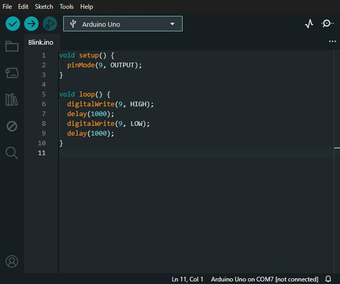
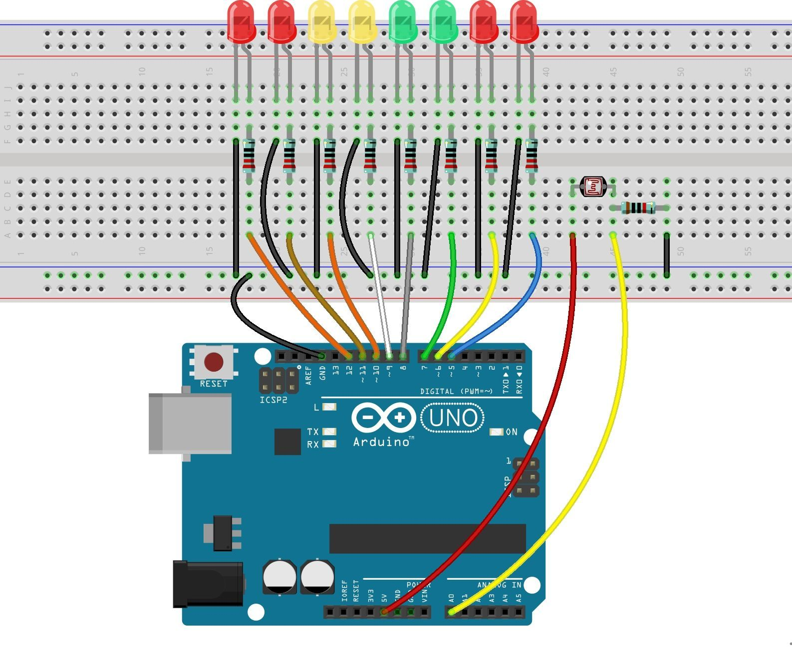
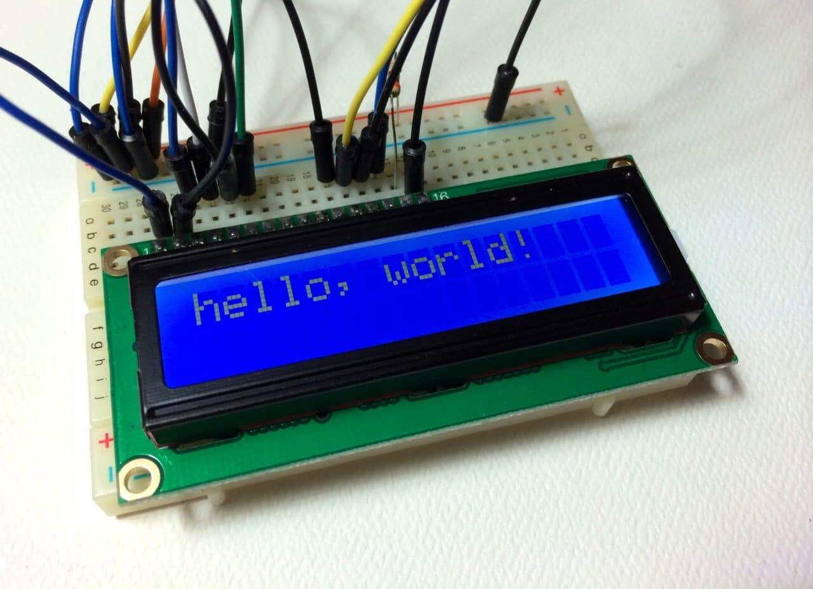

01
Primi Passi
Siamo partiti dal nulla. Imparare a far lampeggiare un LED sembra banale, ma è il primo passo per capire come la corrente elettrica obbedisce a una riga di codice.

Siamo partiti dal nulla. Imparare a far lampeggiare un LED sembra banale, ma è il primo passo per capire come la corrente elettrica obbedisce a una riga di codice.

Abbiamo dato "sensi" ad Arduino. Fotoresistenze per vedere la luce e sensori per percepire l'ambiente circostante, creando sistemi che reagiscono autonomamente.

L'interfaccia LCD ci ha permesso di rendere parlanti i nostri progetti, trasformando impulsi elettrici in parole leggibili sul display.
